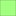

<!doctype html>
<html lang="en">
    <head>
        <meta charset="utf-8">
        <meta http-equiv="X-UA-Compatible" content="IE=edge">
        <meta name="viewport" content="initial-scale=1,user-scalable=no,maximum-scale=1,width=device-width">
        <meta name="mobile-web-app-capable" content="yes">
        <meta name="apple-mobile-web-app-capable" content="yes">
        <link rel="stylesheet" href="css/leaflet.css"><link rel="stylesheet" href="css/L.Control.Locate.min.css">
        <link rel="stylesheet" href="css/qgis2web.css"><link rel="stylesheet" href="css/fontawesome-all.min.css">
        <link rel="stylesheet" href="css/leaflet-search.css">
        <link rel="stylesheet" href="css/leaflet-measure.css">
        <style>
        html, body, #map {
            width: 100%;
            height: 100%;
            padding: 0;
            margin: 0;
        }
        </style>
        <title></title>
    </head>
    <body>
        <div id="map">
        </div>
        <script src="js/qgis2web_expressions.js"></script>
        <script src="js/leaflet.js"></script><script src="js/L.Control.Locate.min.js"></script>
        <script src="js/leaflet.rotatedMarker.js"></script>
        <script src="js/leaflet.pattern.js"></script>
        <script src="js/leaflet-hash.js"></script>
        <script src="js/Autolinker.min.js"></script>
        <script src="js/rbush.min.js"></script>
        <script src="js/labelgun.min.js"></script>
        <script src="js/labels.js"></script>
        <script src="js/leaflet-measure.js"></script>
        <script src="js/leaflet-search.js"></script>
        <script src="data/Naloty_ILOTsm_2.js"></script>
        <script>
        var highlightLayer;
        function highlightFeature(e) {
            highlightLayer = e.target;

            if (e.target.feature.geometry.type === 'LineString') {
              highlightLayer.setStyle({
                color: '#ffff00',
              });
            } else {
              highlightLayer.setStyle({
                fillColor: '#ffff00',
                fillOpacity: 1
              });
            }
        }
        var map = L.map('map', {
            zoomControl:true, maxZoom:28, minZoom:1
        }).fitBounds([[52.26449639283881,21.097191565680568],[52.31534835409496,21.224870872976158]]);
        var hash = new L.Hash(map);
        map.attributionControl.setPrefix('<a href="https://github.com/tomchadwin/qgis2web" target="_blank">qgis2web</a> &middot; <a href="https://leafletjs.com" title="A JS library for interactive maps">Leaflet</a> &middot; <a href="https://qgis.org">QGIS</a>');
        var autolinker = new Autolinker({truncate: {length: 30, location: 'smart'}});
        L.control.locate({locateOptions: {maxZoom: 19}}).addTo(map);
        var measureControl = new L.Control.Measure({
            position: 'topleft',
            primaryLengthUnit: 'meters',
            secondaryLengthUnit: 'kilometers',
            primaryAreaUnit: 'sqmeters',
            secondaryAreaUnit: 'hectares'
        });
        measureControl.addTo(map);
        document.getElementsByClassName('leaflet-control-measure-toggle')[0]
        .innerHTML = '';
        document.getElementsByClassName('leaflet-control-measure-toggle')[0]
        .className += ' fas fa-ruler';
        var bounds_group = new L.featureGroup([]);
        function setBounds() {
        }
        map.createPane('pane_GoogleHybrid_0');
        map.getPane('pane_GoogleHybrid_0').style.zIndex = 400;
        var layer_GoogleHybrid_0 = L.tileLayer('https://mt1.google.com/vt/lyrs=y&x={x}&y={y}&z={z}', {
            pane: 'pane_GoogleHybrid_0',
            opacity: 1.0,
            attribution: '<a href="https://www.google.at/permissions/geoguidelines/attr-guide.html">Map data ©2015 Google</a>',
            minZoom: 1,
            maxZoom: 28,
            minNativeZoom: 0,
            maxNativeZoom: 20
        });
        layer_GoogleHybrid_0;
        map.addLayer(layer_GoogleHybrid_0);
        map.createPane('pane_OSMStandard_1');
        map.getPane('pane_OSMStandard_1').style.zIndex = 401;
        var layer_OSMStandard_1 = L.tileLayer('http://tile.openstreetmap.org/{z}/{x}/{y}.png', {
            pane: 'pane_OSMStandard_1',
            opacity: 1.0,
            attribution: '<a href="https://www.openstreetmap.org/copyright">© OpenStreetMap contributors, CC-BY-SA</a>',
            minZoom: 1,
            maxZoom: 28,
            minNativeZoom: 0,
            maxNativeZoom: 19
        });
        layer_OSMStandard_1;
        map.addLayer(layer_OSMStandard_1);
        function pop_Naloty_ILOTsm_2(feature, layer) {
            layer.on({
                mouseout: function(e) {
                    for (i in e.target._eventParents) {
                        e.target._eventParents[i].resetStyle(e.target);
                    }
                },
                mouseover: highlightFeature,
            });
            var popupContent = '<table>\
                    <tr>\
                        <td colspan="2">' + (feature.properties['fid'] !== null ? autolinker.link(feature.properties['fid'].toLocaleString()) : '') + '</td>\
                    </tr>\
                    <tr>\
                        <th scope="row">id</th>\
                        <td>' + (feature.properties['id'] !== null ? autolinker.link(feature.properties['id'].toLocaleString()) : '') + '</td>\
                    </tr>\
                    <tr>\
                        <th scope="row">Opis_szcz</th>\
                        <td>' + (feature.properties['Opis_szcz'] !== null ? autolinker.link(feature.properties['Opis_szcz'].toLocaleString()) : '') + '</td>\
                    </tr>\
                    <tr>\
                        <th scope="row">Pułap</th>\
                        <td>' + (feature.properties['Pułap'] !== null ? autolinker.link(feature.properties['Pułap'].toLocaleString()) : '') + '</td>\
                    </tr>\
                    <tr>\
                        <th scope="row">Kto_Pozysk</th>\
                        <td>' + (feature.properties['Kto_Pozysk'] !== null ? autolinker.link(feature.properties['Kto_Pozysk'].toLocaleString()) : '') + '</td>\
                    </tr>\
                    <tr>\
                        <th scope="row">Ktory_Raz</th>\
                        <td>' + (feature.properties['Ktory_Raz'] !== null ? autolinker.link(feature.properties['Ktory_Raz'].toLocaleString()) : '') + '</td>\
                    </tr>\
                    <tr>\
                        <th scope="row">Sensor</th>\
                        <td>' + (feature.properties['Sensor'] !== null ? autolinker.link(feature.properties['Sensor'].toLocaleString()) : '') + '</td>\
                    </tr>\
                    <tr>\
                        <th scope="row">Data</th>\
                        <td>' + (feature.properties['Data'] !== null ? autolinker.link(feature.properties['Data'].toLocaleString()) : '') + '</td>\
                    </tr>\
                    <tr>\
                        <th scope="row">Lokalizacj</th>\
                        <td>' + (feature.properties['Lokalizacj'] !== null ? autolinker.link(feature.properties['Lokalizacj'].toLocaleString()) : '') + '</td>\
                    </tr>\
                    <tr>\
                        <th scope="row">Uwagi</th>\
                        <td>' + (feature.properties['Uwagi'] !== null ? autolinker.link(feature.properties['Uwagi'].toLocaleString()) : '') + '</td>\
                    </tr>\
                    <tr>\
                        <th scope="row">Sciezka</th>\
                        <td>' + (feature.properties['Sciezka'] !== null ? autolinker.link(feature.properties['Sciezka'].toLocaleString()) : '') + '</td>\
                    </tr>\
                    <tr>\
                        <th scope="row">Rodzaj</th>\
                        <td>' + (feature.properties['Rodzaj'] !== null ? autolinker.link(feature.properties['Rodzaj'].toLocaleString()) : '') + '</td>\
                    </tr>\
                </table>';
            layer.bindPopup(popupContent, {maxHeight: 400});
        }

        function style_Naloty_ILOTsm_2_0(feature) {
            switch(String(feature.properties['Rodzaj'])) {
                case 'Linia energetyczna':
                    return {
                pane: 'pane_Naloty_ILOTsm_2',
                opacity: 1,
                color: 'rgba(35,35,35,1.0)',
                dashArray: '',
                lineCap: 'butt',
                lineJoin: 'miter',
                weight: 1, 
                fill: true,
                fillOpacity: 1,
                fillColor: 'rgba(163,255,127,1.0)',
                interactive: true,
            }
                    break;
                case 'Tory':
                    return {
                pane: 'pane_Naloty_ILOTsm_2',
                opacity: 1,
                color: 'rgba(128,14,16,1.0)',
                dashArray: '',
                lineCap: 'butt',
                lineJoin: 'miter',
                weight: 3.0, 
                fill: true,
                fillOpacity: 1,
                fillColor: 'rgba(228,26,28,1.0)',
                interactive: true,
            }
                    break;
                case 'NBSOIL':
                    return {
                pane: 'pane_Naloty_ILOTsm_2',
                opacity: 1,
                color: 'rgba(35,35,35,1.0)',
                dashArray: '',
                lineCap: 'butt',
                lineJoin: 'miter',
                weight: 2.0, 
                fill: true,
                fillOpacity: 1,
                fillColor: 'rgba(199,184,165,1.0)',
                interactive: true,
            }
                    break;
            }
        }
        map.createPane('pane_Naloty_ILOTsm_2');
        map.getPane('pane_Naloty_ILOTsm_2').style.zIndex = 402;
        map.getPane('pane_Naloty_ILOTsm_2').style['mix-blend-mode'] = 'normal';
        var layer_Naloty_ILOTsm_2 = new L.geoJson(json_Naloty_ILOTsm_2, {
            attribution: '',
            interactive: true,
            dataVar: 'json_Naloty_ILOTsm_2',
            layerName: 'layer_Naloty_ILOTsm_2',
            pane: 'pane_Naloty_ILOTsm_2',
            onEachFeature: pop_Naloty_ILOTsm_2,
            style: style_Naloty_ILOTsm_2_0,
        });
        bounds_group.addLayer(layer_Naloty_ILOTsm_2);
        map.addLayer(layer_Naloty_ILOTsm_2);
        var baseMaps = {};
        L.control.layers(baseMaps,{'Naloty_ILOT — sm<br /><table><tr><td style="text-align: center;"></td><td>Linia energetyczna</td></tr><tr><td style="text-align: center;"></td><td>Tory</td></tr><tr><td style="text-align: center;"></td><td>NBSOIL</td></tr></table>': layer_Naloty_ILOTsm_2,"OSM Standard": layer_OSMStandard_1,"Google Hybrid": layer_GoogleHybrid_0,},{collapsed:false}).addTo(map);
        setBounds();
        var i = 0;
        layer_Naloty_ILOTsm_2.eachLayer(function(layer) {
            var context = {
                feature: layer.feature,
                variables: {}
            };
            layer.bindTooltip((layer.feature.properties['Data'] !== null?String('<div style="color: #323232; font-size: 14pt; font-family: \'Open Sans\', sans-serif;">' + layer.feature.properties['Data']) + '</div>':''), {permanent: true, offset: [-0, -16], className: 'css_Naloty_ILOTsm_2'});
            labels.push(layer);
            totalMarkers += 1;
              layer.added = true;
              addLabel(layer, i);
              i++;
        });
        map.addControl(new L.Control.Search({
            layer: layer_Naloty_ILOTsm_2,
            initial: false,
            hideMarkerOnCollapse: true,
            propertyName: 'Data'}));
        document.getElementsByClassName('search-button')[0].className +=
         ' fa fa-binoculars';
        resetLabels([layer_Naloty_ILOTsm_2]);
        map.on("zoomend", function(){
            resetLabels([layer_Naloty_ILOTsm_2]);
        });
        map.on("layeradd", function(){
            resetLabels([layer_Naloty_ILOTsm_2]);
        });
        map.on("layerremove", function(){
            resetLabels([layer_Naloty_ILOTsm_2]);
        });
        </script>
    </body>
</html>
